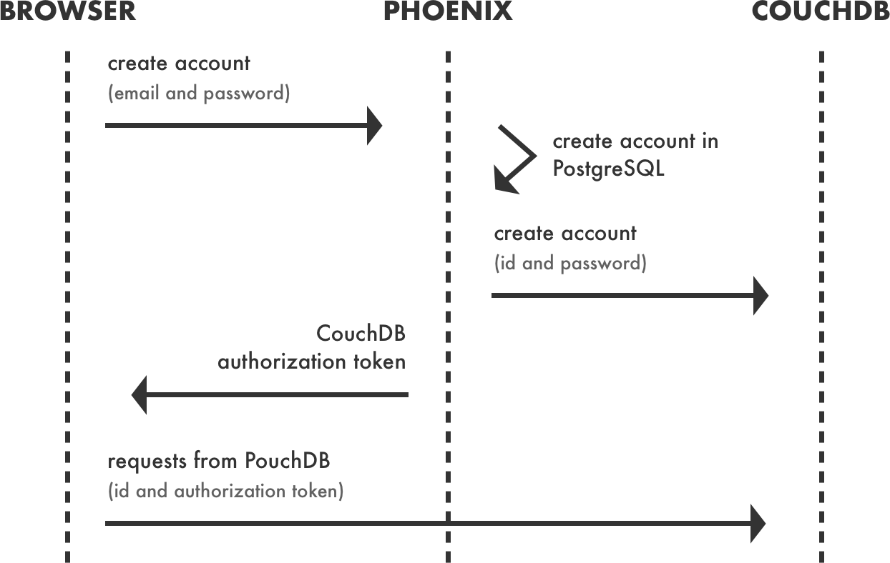
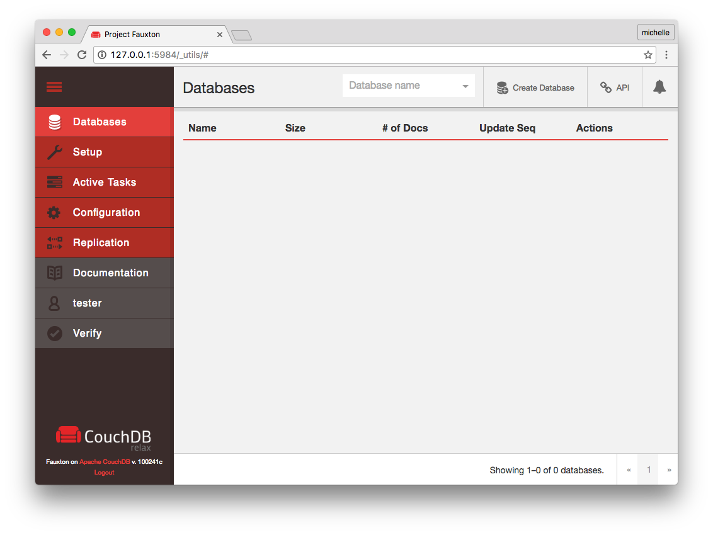

You may have heard about Progressive Web Apps (PWAs). These are web applications that leverage the new Web APIs to look and feel like native applications. There is plenty the web can do today that was only available to native applications before: push notifications; icons on the home screen; offline mode. PWAs are an opportunity to rethink how we build the web and learn from native applications.
When I first started reading about offline applications, CouchDB was popping up all the time. Offline applications are distributed systems, so we need to take into account data reconciliation and conflict resolution. This is when CouchDB comes into play with an out of the box solution.
This is the article that I wish I had found when I first started working with CouchDB. It explains how CouchDB works, its limitations, and how we can use it to build offline web applications.
Understanding CouchDB
CouchDB is a database. It sells itself with this sentence:
Seamless multi-master sync, that scales from Big Data to Mobile, with an Intuitive HTTP/JSON API and designed for Reliability.
It is confusing; especially the part about Big Data to Mobile. And it doesn't stop there. Allow me to add some more confusion to the mix with a list of things that come with CouchDB that you wouldn't expect in a database:
- A built-in reverse proxy
- Support for user accounts, with password hashing and multiple forms of authentication (such as cookies, oauth or tokens).
- Document conflict resolution.
- A changes feed.
- Built-in web interface.
Some will say that CouchDB is trying to be your application server. For this article, I will focus on what we can use to build offline applications.
There is another great piece of technology that we need: PouchDB. It's a database inspired by CouchDB, that runs in the browser and allows applications to store data locally, while offline, and later synchronise it with CouchDB.
Quick recap: CouchDB is a database that you run on your server and has some esoteric capabilities, such as the HTTP/JSON API. CouchDB implements a replication protocol that allows two instances in a cluster to synchronise both ways. PouchDB is a database that runs on the browser and synchronises with CouchDB, like any other instance of a cluster.
In the following sections I explain how both these technologies work.
How data is stored in CouchDB
CouchDB is a document-oriented NoSQL database. An instance of CouchDB hosts many databases. Each database can have documents. A document is a JSON object. CouchDB provides a RESTful HTTP API to read and update documents.
If your CouchDB instance lives in /couchdb, then one of your databases would
live in /couchdb/database1, and a document would live in
/couchdb/database1/document_id. There are special databases, such as _users
that stores CouchDB's users. There are also special documents such as
_security that control access to a database.
CouchDB has views for querying and reporting on documents. Views are defined by JavaScript functions that map keys to values. We can also write reduce functions, in JavaScript, that summarise data.
Because CouchDB speaks HTTP/JSON we can easily bypass our web server, and make requests to it from the browser. We don't have to, but that's what PouchDB expects us to do. When PouchDB syncs, it generates HTTP requests that match CouchDB's API, so there's no point in transforming them.
Is this safe? A database exposed to the world doesn't sound safe at all, but CouchDB has user accounts and permissions. When PouchDB connects to CouchDB, it needs to send some credentials (password, token, cookie, etc), just like with any other web application.
Managing user accounts in CouchDB
How do we create accounts in CouchDB? We can have a web application (in Rails or Phoenix) that has admin credentials and exposes an endpoint that validates information and creates accounts in CouchDB. I don't usually run CouchDB as my primary database; if I'm running Phoenix, my primary database would probably be PostgreSQL, and Phoenix would be responsible for creating user records in PostgreSQL and CouchDB accounts.
I had a hard time understanding how CouchDB fits in my system, so I made a diagram with the different interactions when registering and authenticating requests.

The first request is made to Phoenix, sending the new user's email and password. Phoenix will validate both and create an account, inserting a record in PostgreSQL. After, it takes the id of the new user and sends a request to CouchDB to create an account for that user (the id will be his username in CouchDB). It uses the id, not the email, because it needs a value that doesn't change. Everything up until this point should be in a transaction to make sure there is a CouchDB database for every user.
When both databases have the user, Phoenix encrypts the user's id with a key —that I generated and it's only known to Phoenix and CouchDB—, and returns the resulting token to the browser. The browser then takes that token and the user's id, and uses them to make authenticated requests to CouchDB. Because it has the same key as Phoenix —the one that only the two of them know—, it will validate the requests.
With this we can leverage Phoenix's authentication system to authorise users in CouchDB. The method described here is called Proxy Authentication and you can read more about it in CouchDB's documentation. There are other authentication mechanisms in CouchDB that could fit your use case better.
One database per user
CouchDB offers a minimal read level security: databases can have admins and readers, there is no document level security. Because of that, if you grant a user access to the database, he will be able to read every document in it. Doesn't sound good does it?
This is why most applications use one database per user. If it seems unreasonable, know it is common to have 100k databases in a Cloudant account (Cloudant is a CouchDB provider). Databases are lightweight.
In the context of one database per user, know that PouchDB replicates a single database, not the entire instance. Running PouchDB in your client, you need to specify which database you want to replicate from a CouchDB instance. You can run multiple instances of PouchDB, but everything is already prepared to use this level of permissions.
This works great if you have an app where each user's data is fairly well segmented. However, as soon as you want to allow a user to access another user's data, or you want to create aggregate queries across multiple users' data, the one-database-per-user pattern starts to break down.
There's a plugin that automates the creation of a private database for each user, but with CouchDB 2 you only need to enable it in the configuration.
Data Replication
CouchDB is a peer-based distributed database. It allows users to read and update the same data (shared across multiple instances) while disconnected. CouchDB has the ability to synchronise two copies of the same database. If there is a conflict, both revisions will be saved, and a heuristic will determine which revision wins. Both databases will have the same winner, but you can write your own mechanisms of conflict resolution.
Configuring CouchDB
CouchDB has a built-in web interface called Fauxton. It can be reached at
http://couchdb-url:5984/_utils. Fauxton can be used for setup, configuration,
querying, and most administrative tasks.

CouchDB can also be configured through a text file at /etc/couchdb/local.ini.
Take the following example of a configuration file:
[admins]
admin = mysecretpassword
[cors]
origins = http://localhost, https://localhost, http://couch.mydev.name:8080
[couch_peruser]
enable = true
In this file we create an admin, configure CORS, and enable the plugin that
ensures that a private database exist for each document in the _users
database.
I usually configure CouchDB through this file because it allows me to save it to
my repository and quickly create similar instances. CouchDB doesn't require much
configuration and everything works out-of-the-box; you only need to create the
first admin. For our offline applications we may need to enable couch_peruser,
but you have to evaluate and decide if you need the private database.
Understanding PouchDB
PouchDB's official description, from the docs:
It enables applications to store data locally while offline, then synchronize it with CouchDB and compatible servers when the application is back online, keeping the user's data in sync no matter where they next login.
PouchDB is a database that runs in the browser and synchronises with CouchDB. It's not necessary to have CouchDB to use PouchDB, and you can use it just to have a nice abstraction over IndexDB and Web SQL.
I found that CouchDB + PouchDB solves a couple of use-cases well, but becomes unpleasant to work with if you need data that is shared between multiple users and requires different access levels.
Getting started with PouchDB
In this article I'm not going to build a demonstration application, I'm only going to show the code needed to get started and synchronise an instance of PouchDB with a database in CouchDB.
We start by requiring creating a local database:
import PouchDB from "pouchdb-browser";
const db = new PouchDB("documents");
You can create a document in that database:
db.post({ text: "Such a beautiful day" });
Now that we have a local database, we create another instance of PouchDB that uses a remote storage (CouchDB), instead of Web SQL or IndexDB.
const remoteDatabase = new PouchDB(`http://couchdb-url/documents`);
Finally, we synchronise the databases both ways.
PouchDB.sync(db, remoteDatabase, {
live: true,
heartbeat: false,
timeout: false,
retry: true,
});
In this example I'm enabling replication in both ways and real time. I'm also enabling retry, which will make PouchDB reconnect if the connection goes down. It has a heuristic to choose how much time to wait between reconnection attempts.
A common question about PouchDB is how much data can we store with it? Chrome, Firefox and Safari are only limited by disk space. You can read more about it in PouchDB's FAQ.
Authenticating with CouchDB
If you skimmed over the previous sections, please go back and read the section about CouchDB's user accounts because the information I present there is important to understand the following examples.
In our previous example, we synced a local PouchDB database to a CouchDB
database, but we didn't use any form of authentication. In this section we'll
demonstrate how to sync with each user's private database. Because we enabled a
database per user, we know that our users have a private database in CouchDB.
The private database is named after the user's username (which is the user's id
in PostgreSQL) in the following format userdb-{hex encoded username}.
We start by creating a database and maybe adding some documents to it:
import PouchDB from "pouchdb-browser";
const db = new PouchDB("documents");
db.post({ text: "Such a beautifull day" });
I will now assume that you have authenticated your user, and you have his username and CouchDB token (the ones I talked about in the section about CouchDB's user accounts). Finally, we create a remote database sending the username and token in the AJAX headers.
export sync = (currentUser) => {
const remoteDatabase = new PouchDB(`${COUCHDB_URL}/userdb-${hexEncode(currentUser.id)}`, {
skipSetup: true,
ajax: {
headers: {
'X-Auth-CouchDB-UserName': `${currentUser.id}`,
'X-Auth-CouchDB-Roles': 'users',
'X-Auth-CouchDB-Token': currentUser.couchdb_token,
'Content-Type': 'application/json; charset=utf-8'
}
}
})
PouchDB.sync(db, remoteDatabase, {
live: true,
heartbeat: false,
timeout: false,
retry: true
})
}
The databases are now in sync. But we didn't have to wait for it to start querying the database. Once it is instantiated, we can start working with the data we have locally; that is the selling point of offline applications.
Hosting and Learning Material
There are two more topics I feel obliged to address —hosting and documentation— because it is where I think CouchDB falls short.
I use Heroku a lot. Call me lazy, but when I'm working on a small team, or by myself, I like to know that my application is going to keep running with little maintenance. Heroku doesn't support CouchDB, and all the CouchDB providers I found are expensive for me. The most popular one seems to be Cloudant; you can judge for yourself. For now, I'm running on Digital Ocean, but this isn't the ideal scenario for me.
I noticed there aren't many blog posts on CouchDB; there are a couple of introductory blog posts to PouchDB and that's it. I also know many companies running CouchDB + PouchDB in production, but there doesn't seem to be a big open source application we can learn from.
This isn't my first attempt at CouchDB + PouchDB. A couple of years ago I walked the same road and gave up. I was about to give up this time too, but to be fair, it was my fault for not paying attention to the documentation, because it's very thorough. CouchDB's documentation has been without a doubt a great help.
Final words
I would recommend CouchDB + PouchDB to anyone building offline experiences. It does not work for every use case, but, when it does, it makes building applications a joy. I also intend to check out the competition: Kinto. I don't know yet how different it is from CouchDB, but I would like to know if it shines where CouchDB falls short.